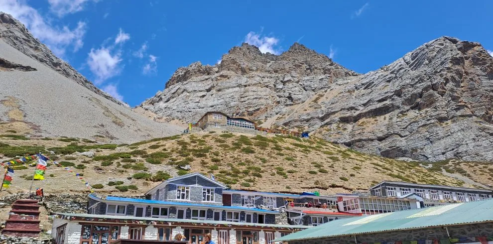
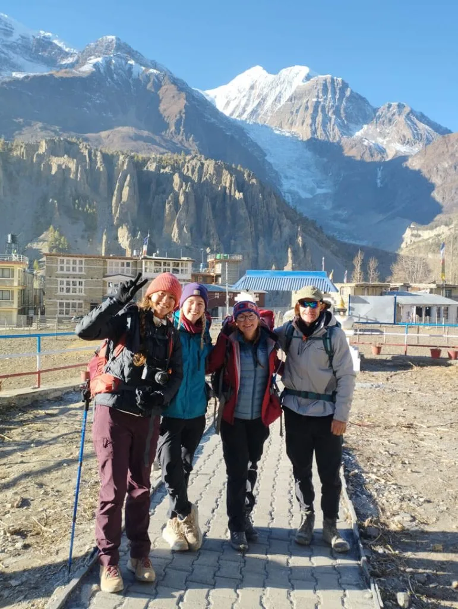
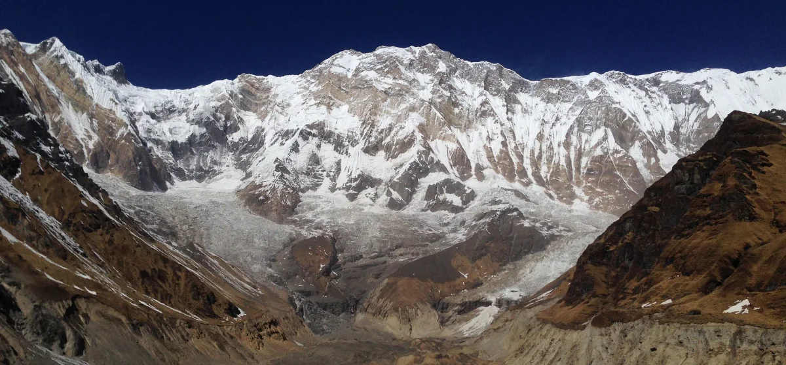
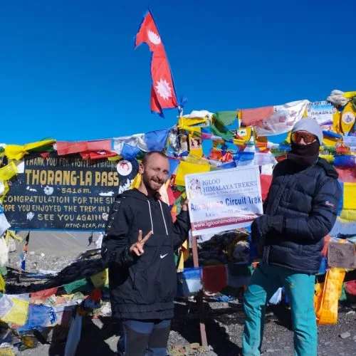
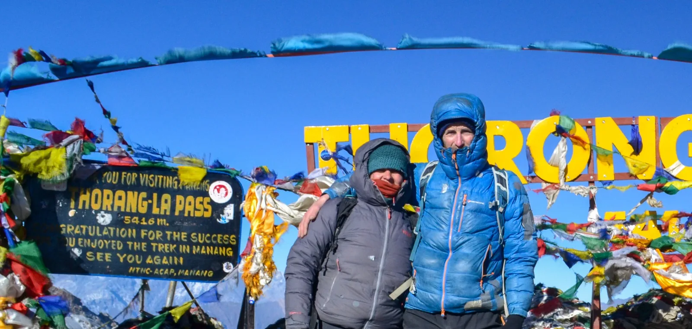
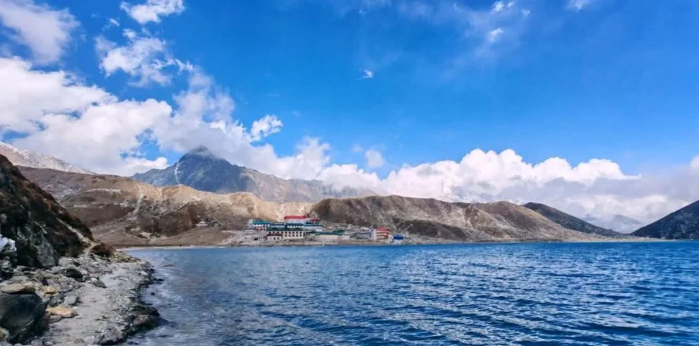
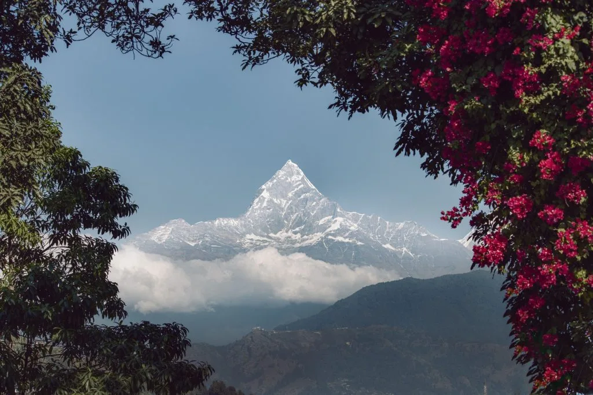

Our Annapurna Circuit trek with Igloo Himalaya Treks went beyond every expectation we had! What first pulled us towards them was their strict safety protocol and personal care. From the 4WD drive through Marsyangdi canyon to crossing Thorong La Pass (5,416m) at sunrise and visiting sacred Muktinath, Sagar and the team made sure we were comfortable, safe, well-acclimatized, and hydrated every single day!
Annapurna Region • Sanctuary of the Annapurnas
5.0
reviews on TripAdvisor
5.0
169 reviews on Google
Annapurna Circuit Trek — 14 Days
Follow the Marsyangdi Valley through villages to Manang before crossing Thorong La on our 14-day Annapurna Circuit Trek. You walk through Dharapani, Chame and Upper Pisang, with an acclimatisation day in Manang before continuing towards the pass at 5,416 m. The descent takes you to Muktinath, Kagbeni and Jomsom, where the walking route ends.

Travelers' Choice
Best of the Best 2026




Key Trip Facts
Duration
14 days (inc. Manang acclimatisation)
Difficulty
Challenging (high pass crossing)
Max Altitude
~5,416 m (Thorong La Pass)
Destination
Nepal
Activity
Trekking
Accommodation
3-star hotels (KTM/PKR); Teahouses on trek
Transport
Road to Jagat & from Jomsom; Bus/Flight to KTM
Meals
City hotel breakfasts; Trekking meals; Welcome dinner
Recommended Season
Spring (Mar–May) & Autumn (Sep–Nov)
Trek Starts
Jagat, via Besisahar
Trek Ends
Jomsom, followed by drive to Pokhara
Trek Region
Annapurna Conservation Area
Package Start Point
Kathmandu, Nepal
Package End Point
Kathmandu, Nepal
Annapurna Circuit Trek Overview
Our 14-day Annapurna Circuit Trek follows the Marsyangdi Valley from Jagat to Manang, then crosses Thorong La at 5,416 m into Mustang. You finish the walking journey in Jomsom after passing Muktinath and Kagbeni. The route combines mountain villages, forest trails and open high-altitude terrain, with an extra night in Manang before the pass approach.
After arriving in Kathmandu, you drive through Besisahar to Jagat, where the walking route begins. The trail follows the Marsyangdi River through Tal and Dharapani, then climbs steadily towards Chame and Upper Pisang. Pine forests and steep valley sides gradually give way to drier, more open mountain slopes. In the villages, stone houses, Buddhist monasteries and carved prayer walls reflect the traditions of communities living along the route.
From Upper Pisang, you continue to Manang by the higher route through Gyaru or the lower approach through Humde. An acclimatisation day includes a hike towards Chhongkor Viewpoint and Gangapurna Lake, returning to Manang to sleep. You then climb through Yak Kharka to Thorong Phedi, your overnight base before the early start for Thorong La.
The pass crossing is the longest and most demanding walking day. You climb to 5,416 m before descending into Mustang to Muktinath, a pilgrimage site respected by Hindus and Buddhists. The following day takes you through Kagbeni to Jomsom beside the Kali Gandaki. Prepare for walking, uneven ground and cold conditions; acclimatisation reduces risk but cannot guarantee an illness-free ascent.
You stay in mountain teahouses during the trek, with hotels in Kathmandu and Pokhara. The programme covers arrival, eight trekking days, an acclimatisation hike, return travel and departure.
Key Route Highlights & Destinations
Jagat
Dharapani
Chame
Upper Pisang
Manang (3,540 m)
Thorong La Pass (5,416 m)
Muktinath
Kagbeni
Jomsom
Planning your Annapurna Circuit Trek?
Chat with our senior Sherpa guides — real local experts, not bots.
Replies within 15–30 minutes
Annapurna Circuit Trek Highlights
Cross Thorong La Pass at 5,416 m, linking the Manang side of the Annapurna region with Muktinath and the Mustang valley beyond.
Spend an acclimatisation day in Manang, hiking towards Chhongkor Viewpoint and Gangapurna Lake before returning overnight.
Walk through Upper Pisang and Manang, where stone houses, monasteries and prayer walls sit beneath the mountains.
Follow the Marsyangdi Valley through forests, river crossings and villages between Jagat and Chame.
Visit Muktinath, a pilgrimage site respected by Hindus and Buddhists, after descending from Thorong La Pass.
Continue through Kagbeni to Jomsom along the Kali Gandaki, with dry hills and mountain views when the weather is clear.
Why Book the Annapurna Circuit Trek with Igloo Himalaya Treks?
We help you prepare in Kathmandu and support your journey through the Annapurna region. This package includes the following arrangements:
Trek Briefing and Preparation
Before leaving Kathmandu, we explain the walking programme and preparations for the pass. You can ask questions about equipment, accommodation and the Manang acclimatisation day during your arrival briefing.
Guide and Porter Support
An experienced, English-speaking, licensed guide leads the trek, with porter support included. For groups of more than eight travellers, an additional assistant guide joins the team to support the walking programme.
Equipment Provided for the Trek
We provide a sleeping bag, down jacket and duffel bag for use during the trek. Return these after the journey, and bring your own boots, clothing and other personal trekking equipment.
Communication When Plans Change
Weather and road conditions can affect the approach, pass crossing and return travel. Our team explains available options and discusses changes with you, including extra accommodation or transport costs outside the programme.
Day 1: Arrival in Kathmandu
Overnight altitude: Approximately 1,350 m — Welcome to Nepal
Overnight: ~1,350 m
3-star hotel in Kathmandu, twin sharing
Welcome dinner included
Welcome to Nepal. Our representative meets you at Tribhuvan International Airport and transfers you to your hotel in Kathmandu. After checking in, you can rest before meeting your guide for an introduction to the Annapurna Circuit programme. Depending on your arrival time, you can explore nearby Thamel or rest after your flight. In the evening, we share a welcome dinner and discuss the route, equipment and preparations before departure.
Day 2: Drive to Jagat via Besisahar
Driving time: ~8–9 hours — Jagat, around 1,300 m
Driving: ~8–9 hours
Teahouse in Jagat (~1,300 m)
Meals: Breakfast, lunch and dinner
After breakfast, we leave Kathmandu by road and travel towards Besisahar. The Prithvi Highway follows river valleys through terraced hills and small towns before we turn into the Marsyangdi Valley. At Besisahar, we continue by jeep towards Jagat, following the rougher road beside the Marsyangdi River. Roadworks, rain and traffic can affect this long travel day. Jagat is our first mountain overnight stop, with teahouses and stone-paved paths above the river. Settle into your room and prepare your daypack for tomorrow’s first walk towards Dharapani.
Day 3: Trek to Dharapani
Walking: ~5–6 hours, ~12–14 km — Dharapani, around 1,960 m
Walk: ~5–6 hrs | ~12–14 km
Teahouse in Dharapani (~1,960 m)
Meals: Breakfast, lunch and dinner
Our first walking day follows the Marsyangdi Valley from Jagat towards Dharapani. The route passes river crossings and village paths, with climbs and descents between the mountain villages. We continue through Tal, where the valley opens around a broad riverbed beneath steep slopes. Beyond the village, the route climbs towards Dharapani, with forest sections and prayer walls along the way. Walk at a comfortable pace, getting used to the terrain. We stay in a teahouse and discuss tomorrow’s stage over dinner with your guide.
Day 4: Trek to Chame
Walking: ~5–6 hours, ~14 km — Chame, around 2,650 m
Walk: ~5–6 hrs | ~14 km
Teahouse in Chame (~2,650 m)
Meals: Breakfast, lunch and dinner
We leave Dharapani and climb through forest and hillside villages towards Chame. The trail passes Timang village before Koto, with views towards Manaslu when the weather is clear. Sections follow or cross the road. Chame is the administrative centre of Manang District, with shops and teahouses beside the Marsyangdi River. After today’s uphill walk, settle into your teahouse room and rest. In clear weather, Annapurna II and Lamjung Himal are visible from paths around the village.
Day 5: Trek to Upper Pisang
Walking: ~5–6 hours, ~13 km — Upper Pisang, around 3,300 m
Walk: ~5–6 hrs | ~13 km
Teahouse in Upper Pisang (~3,300 m)
Meals: Breakfast, lunch and dinner
From Chame, we follow the valley through pine forest towards Bhratang and Dhikur Pokhari. The curved rock face of Paungda Danda rises beside the route as the mountain landscape gradually opens. The final climb leads to Upper Pisang, a hillside village with stone houses and a Buddhist monastery. Annapurna II stands across the valley when skies are clear. We stay overnight around 3,300 m, so keep the afternoon gentle and tell your guide about headaches, nausea or other symptoms before dinner.
Day 6: Trek to Manang via Gyaru or Humde
Walking: ~6–7 hours, ~16 km — Manang, around 3,540 m
Walk: ~6–7 hrs | ~16 km
Teahouse in Manang (~3,540 m)
Meals: Breakfast, lunch and dinner
We continue towards Manang, choosing the higher approach through Gyaru or the lower route through Humde according to conditions and group pace. The higher trail requires more climbing but offers wider views above the valley. Both approaches lead towards Braga and Manang, where fields and stone houses sit below the peaks. The village has teahouses, shops and monasteries, making it a base before the higher stages. We spend tonight here and remain for another night after tomorrow’s acclimatisation hike.
Day 7: Acclimatisation Day in Manang — Hike to Chhongkor Viewpoint and Gangapurna Lake
Hike: ~3–4 hours, ~5–6 km — Return to Manang, around 3,540 m
Hike: ~3–4 hrs | ~5–6 km
Teahouse in Manang (~3,540 m)
Meals: Breakfast, lunch and dinner
We spend a second night in Manang to allow more time to adjust to altitude. After breakfast, a shorter hike takes us towards Chhongkor Viewpoint and Gangapurna Lake, with the route adapted to your condition. The viewpoint looks across Manang and the surrounding peaks, while the lake lies below Gangapurna Glacier. We return to our teahouse to rest overnight. This is an active acclimatisation day; report symptoms before attempting the hike or continuing higher tomorrow.
Day 8: Trek to Yak Kharka
Walking: ~4–5 hours, ~10 km — Yak Kharka, around 4,050 m
Walk: ~4–5 hrs | ~10 km
Teahouse in Yak Kharka (~4,050 m)
Meals: Breakfast, lunch and dinner
We leave Manang and climb towards Gunsang, following the trail into open pasture and juniper scrub. The valley becomes quieter as we gain altitude, with fewer trees and wider views of the mountains when the weather is clear. The route reaches Yak Kharka, where teahouses stand among grazing slopes. Today’s sleeping altitude rises by 510 m, so walk slowly and keep your guide informed about how you feel. At the lodge, rest before the approach to Thorong Phedi.
Day 9: Trek to Thorong Phedi
Walking: ~4–5 hours, ~6–7 km — Thorong Phedi, around 4,540 m
Walk: ~4–5 hrs | ~6–7 km
Teahouse in Thorong Phedi (~4,540 m)
Meals: Breakfast, lunch and dinner
From Yak Kharka, we continue towards Thorong Phedi through open, rocky terrain. The route crosses a side valley and follows narrower sections of hillside before reaching the mountain lodges. Thorong Phedi is our overnight base for tomorrow’s pass crossing. We stay here rather than moving to High Camp tonight. Spend the afternoon resting and preparing your warm layers, headlamp and water for the early departure. Your guide reviews the crossing plan and checks how you feel. If conditions or symptoms make the ascent unsuitable, the programme must change before we continue higher.
Day 10: Cross Thorong La Pass and Trek to Muktinath
Walking: ~8–9 hours, ~16 km — Thorong La Pass (5,416 m) to Muktinath (~3,800 m)
Walk: ~8–9 hrs | ~16 km (Pass 5,416 m)
Teahouse near Muktinath (~3,800 m)
Meals: Breakfast, lunch and dinner
We start before sunrise for the climb to Thorong La, carrying warm layers and a headlamp. The ascent passes High Camp before continuing over open mountain ground. Take steady steps and follow your guide as the air becomes noticeably thinner. At 5,416 m, the pass marks the highest point of the trek. After a brief stop, we descend steeply towards Muktinath in Mustang, losing substantial altitude on a long downhill trail. Muktinath is a pilgrimage site for Hindus and Buddhists; we stay nearby tonight.
Day 11: Trek from Muktinath to Jomsom via Kagbeni
Walking: ~6–7 hours, ~18 km — Kagbeni to Jomsom, around 2,750 m
Walk: ~6–7 hrs | ~18 km
Teahouse in Jomsom (~2,750 m)
Meals: Breakfast, lunch and dinner
We descend from the Muktinath area towards Kagbeni, following the dry hills of Lower Mustang. The route brings us into the Kali Gandaki Valley after yesterday’s high pass crossing. Kagbeni has narrow lanes, old houses and a Buddhist monastery beside the river. After a break, we continue towards Jomsom along the valley, where strong afternoon winds can make walking tiring. Some sections follow the road. Jomsom is our final trekking overnight stop, with time to rest before tomorrow’s drive.
Day 12: Drive from Jomsom to Pokhara
Driving time: ~8–9 hours — Pokhara, around 850 m
Drive: ~8–9 hours
3-star hotel in Pokhara, twin sharing (~850 m)
Meals: Breakfast included
After breakfast, we leave Jomsom by jeep and follow the Kali Gandaki Valley towards Pokhara. The road passes Marpha, Tukuche and Kalopani as dry mountain slopes give way to greener hills. This is a long journey, with rough stretches and possible delays from traffic, rain or roadworks. On arrival in Pokhara, check into your hotel and rest. If time allows, you can take a walk near Phewa Lake. Lunch and dinner are at your own expense during this return travel day.
Day 13: Drive or Fly from Pokhara to Kathmandu
Driving: ~6–7 hours / Optional flight: ~25–30 min — Kathmandu (~1,350 m)
Bus: ~6–7 hrs / Flight: ~25–30 min
3-star hotel in Kathmandu, twin sharing
Meals: Breakfast included
After breakfast, we return to Kathmandu by tourist bus. An optional flight costs extra and depends on availability. Allow for travel delays caused by weather or road conditions. The road journey follows river valleys towards Kathmandu, with stops along the way. If flying, allow time for airport formalities and possible delays. Once at your hotel, you can rest, organise your belongings or explore Thamel before tomorrow’s departure.
Day 14: Departure from Kathmandu
Tribhuvan International Airport — Final departure from Nepal
Airport Transfer
No overnight stay
Meals: Breakfast included
Your Annapurna Circuit Trek ends today. After breakfast, you prepare for your onward journey. Depending on your flight time, you may have an opportunity for a final walk nearby before leaving the hotel for departure. Our representative transfers you to Tribhuvan International Airport for your departure.
What’s Included in the Annapurna Circuit Trek
✓
Airport transfers: Private vehicle pickup and drop-off for your arrival and departure.
✓
Transport: Road transfers to Jagat via Besisahar, private jeep from Jomsom to Pokhara and return tourist bus to Kathmandu.
✓
Accommodation: Two nights in a 3-star Kathmandu hotel, one night in Pokhara and ten teahouse nights along the walking route, on a twin-sharing basis where available.
✓
Meals: Hotel breakfasts in Kathmandu and Pokhara, three meals daily from Jagat to Jomsom, and a welcome dinner after arrival. Breakfast is included before leaving Jomsom on the return journey.
✓
Guide and porter: An experienced, English-speaking, licensed trekking guide and porter support during the trek.
✓
Permits and entry fees: The Annapurna Conservation Area permit, with assistance for paperwork, local taxes and service charges.
✓
Trekking equipment: Complimentary use of a sleeping bag, down jacket and duffel bag during the trek, returned after the journey ends.
✓
First-aid supplies: A medical kit and pulse oximeter carried by your guide.
✓
Trip briefing: An introduction to the programme and preparations after arrival.
✓
Additional guide support: An assistant guide is included for groups with over eight travellers.
What’s Not Included in the Annapurna Circuit Trek
✕
International flights and Nepal visa: Airfare to and from Nepal and your visa fee.
✕
Travel insurance: The cost of insurance covering high-altitude trekking, medical treatment and emergency helicopter evacuation costs.
✕
Emergency evacuation: Helicopter rescue and other evacuation costs, requiring suitable insurance cover or separate personal payment.
✕
Personal equipment: Boots, clothing and other personal trekking items beyond the sleeping bag, down jacket and duffel bag provided.
✕
Extra food and drinks: Drinking water, snacks, alcoholic and non-alcoholic beverages, and extra food purchased beyond the included daily meals.
✕
City lunches and dinners: Kathmandu and Pokhara meals other than the included welcome dinner.
✕
Teahouse services: Hot showers, Wi-Fi, laundry and charging fees.
✕
Team tips: Gratuities for your guide, porter and drivers.
✕
Optional flights and additional services: Flight upgrades, extra accommodation, meals or transport arising from early return, delays or itinerary changes.
Annapurna Circuit Trek Dates & Availability
Group Departures
If you would like to trek with other travellers, ask us about upcoming group departures. We’ll confirm the available dates, spaces and price for your chosen departure.
Private Trek Dates
Prefer to travel with your own group? Send us your preferred arrival date and number of travellers. We’ll check the arrangements for a private trek.
Contact us for a confirmed price in US dollars based on your dates and group size. Review the final quotation and included services before booking.
What to Pack for the Annapurna Circuit Trek
Pack layers for warmer valley walking, cold mornings and nights, and possible snow near Thorong La. Keep water, warm clothing, rain protection, medicines and valuables in your daypack. Use the supplied duffel bag for belongings carried by the porter.
Checklist Progress
0 / 35 Packed
Hiking Gear
Clothing
Sleeping Equipment
Toiletries & Hygiene
Electronics
Documents & Personal Items
Note on Porter Baggage: Your porter carries the main bag, while you keep essentials in a daypack. Confirm the luggage allowance before departure and keep valuables with you throughout the walk.
0/10 read
Click topics below to explore essential briefings
Trek Difficulty and Fitness
The Annapurna Circuit does not require technical climbing skills in suitable conditions, but it is demanding. You walk on consecutive days, with climbs and long descents on uneven ground. Thorong La reaches 5,416 m, and the crossing takes around eight to nine hours in favourable conditions.
Previous hiking experience is helpful. First-time trekkers should build endurance before departure and become comfortable walking uphill and downhill regularly with a daypack.
Begin preparing around two to three months beforehand, allowing longer if you are starting from a low fitness level. Gradually combine regular walks, hill hikes and strength exercises. Practise in the boots you will wear on the trek.
Altitude and Acclimatisation
We spend two nights in Manang, with a shorter hike on Day 7 before continuing higher. This allows time to adjust, although altitude illness remains possible during the ascent.
Tell your guide promptly about headaches, nausea, dizziness or unusual fatigue. Do not continue to a higher sleeping altitude while experiencing symptoms of altitude illness. If symptoms worsen despite resting at the same elevation, descent is necessary. Reaching Thorong La must remain secondary to your health.
Medical Conditions and Travel Insurance
If you have an existing medical condition, seek advice from a healthcare professional familiar with high-altitude travel before booking. Discuss your planned route and any medicines you take.
Arrange travel insurance covering trekking to at least 5,416 metres, emergency helicopter evacuation and medical treatment in Nepal. Check exclusions, excess charges and the insurer’s emergency assistance procedure beforehand. Carry your policy details and emergency contact number during every stage of the trek.
Accommodation and Room Facilities
You stay in twin-sharing three-star hotels in Kathmandu and Pokhara, with breakfast included, and mountain teahouses during the trek. Rooms become simpler as you gain altitude towards the high pass approach.
Expect basic rooms and shared bathroom facilities at Yak Kharka and Thorong Phedi. Private rooms can be limited, and sharing may be necessary during busy periods. Nights above Manang are often cold, even in spring and autumn.
Food and Dietary Requirements
Trekking meals are included along the route. Teahouse menus commonly offer dal bhat, noodles, potatoes and soups, with options varying between lodges.
Tell us about allergies or dietary requirements before booking so we can discuss what can be arranged along the route. Explain strict requirements clearly, including any concerns about shared cooking equipment.
Drinking Water
Carry reusable bottles and drink boiled or appropriately treated water. Stream water and untreated tap water may still contain germs that cause illness.
Boiling is the most reliable way to kill germs. If boiling is unavailable, filtration followed by disinfection offers broader protection than many portable filters alone. Follow the instructions for your water-treatment equipment or tablets.
Guide and Porter Support
An experienced, English-speaking, licensed trekking guide and porter support are both included. Your porter carries the main bag while you carry daily essentials. Confirm the porter-sharing arrangement and luggage allowance before leaving Kathmandu.
Showers, Charging and Communication
Hot showers, Wi-Fi and device charging cost extra, with availability varying between lodges. Mobile reception and internet connections can be unreliable, particularly around Yak Kharka and Thorong Phedi. Carry a power bank and let family know that you may be out of contact during trekking stages.
Permits and Documents
The ACAP entry permit is included. TIMS registration is also required under Nepal Tourism Board rules; confirm its fee coverage with us. Carry your passport and insurance details. Your Nepal visa is separate from the package.
Road Delays and Extra Time
Rough roads, roadworks and heavy rain can delay the transfers to Jagat and from Jomsom. Allow flexibility around return travel before your international departure.
The included Pokhara–Kathmandu journey is by tourist bus; flights are optional. Ask about the flight supplement and allow time in case travel plans change.
Altitude Profile of the Annapurna Circuit Trek
The route begins at Jagat and climbs through Dharapani, Chame and Upper Pisang to Manang. After two nights in Manang, you then continue to Yak Kharka and Thorong Phedi. Thorong La is the highest point you visit, followed by a descent to Muktinath and Jomsom.
Higher Places You Visit:
- Day 7 — Chhongkor Viewpoint: An acclimatisation hike above Manang, returning to Manang for the night.
- Day 8 — Yak Kharka: Around 4,050 m, your overnight stop on the approach towards Thorong Phedi.
- Day 9 — Thorong Phedi: Around 4,540 m, your overnight base before the departure for Thorong La.
- Day 10 — Thorong La Pass: At 5,416 m, the highest point before descending towards Muktinath.
Thorong La is a daytime crossing, not an overnight stop. You sleep at Thorong Phedi beforehand and descend to Muktinath afterwards, subject to suitable conditions.
Weather and Best Time for the Annapurna Circuit Trek
Spring, from March to May, and autumn, from September to November, are the best seasons for the Annapurna Circuit. Both offer favourable walking conditions and opportunities for mountain views, although rain, cloud, cold weather and snowfall remain possible, particularly around the Thorong La crossing.
How Weather Changes Along the Route
The lower Marsyangdi Valley is warmer, with forested slopes beside the river. Conditions become colder and more exposed beyond Upper Pisang, especially during the approach from Manang towards Thorong Phedi. Around Thorong La, wind and snow can make the crossing difficult even during popular trekking months. The descent towards Muktinath and Jomsom enters drier terrain, where afternoon winds can be strong. Carry layers and weather protection throughout the journey.
Which Season Should You Choose?
Choose spring if gradually warming days and flowering lower forests interest you alongside the high pass journey. Choose autumn, particularly October or November, if mountain visibility is your main priority. Winter and monsoon call for greater travel flexibility and preparation.
Annapurna Circuit Trek Route Map
Our detailed topographic trail map illustrates the complete circuit route around the Annapurna massif, highlighting all key checkpoints, overnight mountain villages, acclimatization waypoints, and the high crossing of Thorong La Pass (5,416m).
Book the Annapurna Circuit Trek
Send us your preferred travel dates, number of travellers and any questions about the trek. We’ll check availability and confirm the price and arrangements for your group. If you are unsure whether this itinerary suits your experience or fitness, tell us about your previous walking trips so we can discuss the programme together.
Best Himalayan Trekking Reviews
Over 15,000 adventure seekers have explored Everest, Annapurna, and Manaslu with Igloo Himalaya Treks.

9 May

28 February

11 January

14 March


Annapurna Circuit Trek FAQs
General & Route
Can I do this trek without previous trekking experience?
∨
Hiking experience helps because the route includes consecutive walking days and a demanding high pass. First-time trekkers should prepare with hill walks and discuss fitness and altitude concerns before booking. Technical climbing skills are unnecessary in suitable conditions.
What is the highest altitude on this itinerary?
∨
Thorong La Pass at approximately 5,416 metres is the highest point. We cross it on Day 10 and descend to Muktinath afterwards. Thorong Phedi is the previous night’s base; we do not sleep at the pass.
Does this route include Tilicho Lake or Poon Hill?
∨
No. This 14-day route crosses Thorong La and finishes walking at Jomsom. Tilicho Lake features in our 18-day Annapurna Circuit Trek package, while the Classic Annapurna Circuit continues through lower valleys to Ghorepani and Poon Hill.
How does the 17-day package differ from this itinerary?
∨
Our Classic Annapurna Circuit Trek — 17 Days continues beyond Muktinath through Marpha, Tatopani and Ghorepani, including the Poon Hill sunrise hike. This 14-day itinerary instead walks through Kagbeni to Jomsom, then returns to Pokhara by road on Day 12.
Do I need to carry my main trekking bag?
∨
Porter support is included, so you carry a daypack with water, warm layers, medicines and valuables. Your main belongings travel separately with the porter. Confirm the luggage allowance and porter-sharing arrangement before departure from Kathmandu.
Do I need to bring a sleeping bag and down jacket?
∨
We provide a sleeping bag, down jacket and duffel bag for use during the trek. Return them afterwards. Bring your own boots, clothing and personal equipment, and ask about the supplied gear if you have particular requirements.
Do we sleep at Thorong La Pass?
∨
No. You stay at Thorong Phedi on Day 9, cross the pass the following morning and descend to the Muktinath area for the night. The pass is a daytime high point, with the crossing dependent on conditions and health.
Are acclimatisation days complete rest days?
∨
No. The Manang day includes a shorter hike towards Chhongkor Viewpoint and Gangapurna Lake before returning to the same teahouse. Your guide adjusts the outing to conditions and how you feel; report symptoms before starting.
Does being fit protect me from altitude sickness?
∨
No. Good fitness helps with the walking demands, but it does not prevent altitude illness. Fit and experienced trekkers can also become unwell. Follow your guide’s advice and report symptoms promptly instead of assuming fitness will protect you.
What should I do if I feel unwell at altitude?
∨
Tell your guide promptly about headaches, nausea, dizziness or unusual fatigue. Do not ascend to a higher sleeping altitude while experiencing symptoms of altitude illness. If symptoms worsen despite rest at the same elevation, descent is necessary.
Is insurance covering trekking to 5,500 metres sufficient?
∨
A 5,500-metre altitude limit covers the planned maximum of 5,416 metres, but altitude alone is insufficient. Confirm cover for this trekking route, emergency helicopter evacuation and medical treatment, including exclusions, policy limits and the insurer’s emergency assistance procedure.
Can I book as a solo traveller?
∨
Yes. You can enquire about joining a group departure or arranging a private trek. Send us your preferred dates so we can check the available arrangements and confirm the price that applies to your booking.
MORE ADVENTURES
You Might Also Like
If you would prefer a longer Circuit, a lake visit or a base camp journey, consider these Annapurna trekking packages.

Annapurna Classic 17 DaysClassic Annapurna Circuit Trek (17 Days)
Continue beyond Muktinath through Marpha, Tatopani and Ghorepani, with the Poon Hill sunrise hike before returning towards Pokhara.

High Glacial Lake 18 DaysAnnapurna Circuit with Tilicho Lake (18 Days)
Add the Tilicho Lake side trip to the Annapurna Circuit before crossing Thorong La. Additional mountain walking and high glacial lakes.

Sanctuary Classic 13 DaysAnnapurna Base Camp via Poon Hill (13 Days)
Walk through Ghorepani and visit Poon Hill before continuing into the Annapurna Sanctuary to 4,130 m Base Camp.